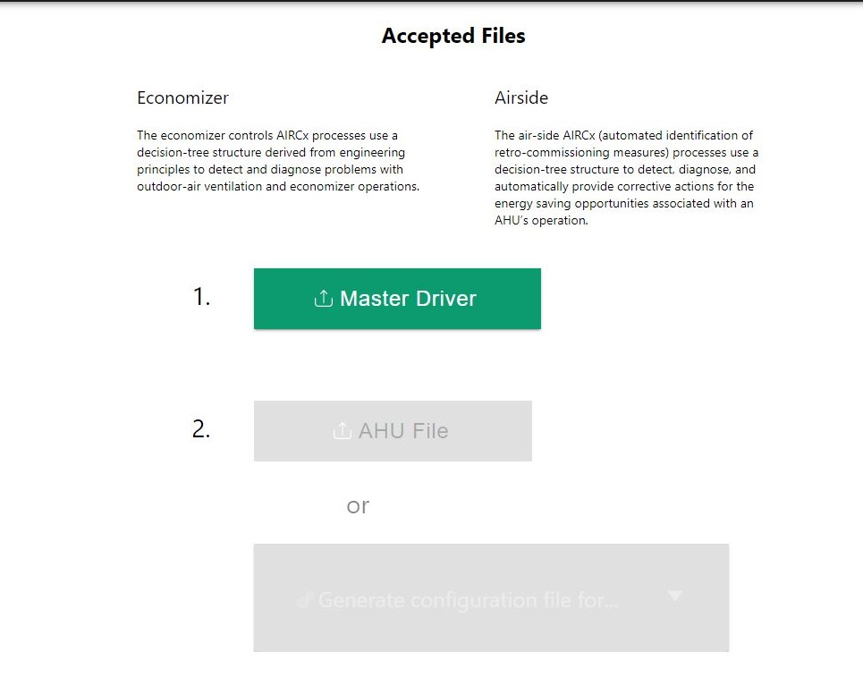

Ahu Airside Userguide¶
Importing Master Driver Configuration Store¶
At the initial homepage, the user will be prompted to upload the Master Driver file. Values within the Master Driver Configuration Store will be parsed to provide options for Campus, Buidling, Device and Points throughout the application.
Once the user has selected the Master Driver Configuration Store, this homepage will not appear again.
Warning
Uploading a new Master Driver Configuration Store will remove all current data in the application.
After a Master Driver File is uploaded, there will be two new buttons that will appear in green below.
Below The Master Driver button, there are two buttons that say: AHU File and Generate configuration file for… The Ahu File will allow the user to submit a file that has been created by the AHU config previously, and the Generate configuration file for… will allow the user to create a new configuration file for either the ECONOMIZER or AIRSIDE.
Once Airside is selected, a new page will appear.
Airside¶
This section will go over all of the items that are located within the Airside button located in the Generate configuration file for… button.
When Airside is selected, there will be a popup on screen that appears:

When the Economizer is selected there will be a prompt to select Campus, Building, and Device. These will all be selected as dropdown inputs.
Note
The Campus must be selected first before the other dropdown can be selected.
AHU Application Configuration¶
The AHU Application behavior is controlled through these configuration Pages:
Point Mapping
Settings
Thresholds
Point Mapping¶
Point Mapping will be the first tab on the left side of the Economizer page. This will be located underneath the main configuration file and the Default Economizer.

Once Point Mapping is selected, configurations will show on the center of the screen.

Once the configuration is shown in the center of the screen, the dropdown inputs may be selected to configure.
All of the Point Mapping configuration settings will be drop down inputs that are dependant Upon the main configuration file selected for the page.

Settings¶
Settings is the second tab inside of the Ahu configuration Economizer section. Once settings is selected the center section will populate with configurations.
At the top of the settings page there are two options to choose from:
Default
The settings default page will have preset data available as the settings tab is selected (Default).
When Default is selected, on the right side of the page, within the JSON code the default data will be displayed:
Underneath the sensitivity options, there are two configuration options:
Autocorrect Flag
Underneath the default selection, there will be another option of two choices:
If False is selected, there will only be the options of Number Required Data and Warm-up Time. More configuration options will appear if true is selected.
Supply Air-tempurature Retuning
This selection will be a floating point variable type ranging from 1.0 to 3.0. The user may input an integer or use the slider to obtain the number required.
Duct-Static pressure Retuning
This selection will be a floating point variable type ranging from 0.05 to 0.25. The user may input an integer or use the slider to obtain the number required.
Minimum Duct Static Pressure Setpoint
This selection will be a floating point variable type ranging from 0.25 to 1.0. The user may input an integer or use the slider to obtain the number required.
Maximum Duct Static Pressure Setpoint
This selection will be an variable type ranging from 0.25 to 3.0 degrees. The user may input an integer or use the slider to obtain the number required.
Minimum Supply Air-Temperature Setpoint
This selection will be a floating point variable type ranging from 50 to 60. The user may input an integer or use the slider to obtain the number required.
Maximum Supply Air-Temperature Setpoint

This selection will be a floating point variable type ranging from 55 to 75. The user may input an integer or use the slider to obtain the number required.
Number Required Data
This selection will be an integer type ranging from 1 to 100. The user may input an integer or use the slider to obtain the number required.
Warm-up Time
This selection will be an integer type ranging from 5 to 30. The user may input an integer or use the slider to obtain the number required.
Thresholds¶
Thresholds is the third tab in the AHU Airside configuration.
Once the Threshold tab is selected, there will be an option in the center of the screen to choose from Use default threshold (recommended) or Customize threshold parameters.
Use Default Threshold
When this option is selected, the default options will be used. The values will be shown inside of the JSON code on the right side of the screen.
Customize threshold parameters Once Customize threshold parameters* is selected, there will be two options to customize:
Supply-Air Temperature Setpoint Deviation Threshold .. image:: _images/supply_Thres.jpg
This selection will be a integer variable type ranging from 2 to 10. The user may input an integer or use the slider to obtain the number required.
Static Pressure Setpoint Deviation Threshold
This selection will be a integer variable type ranging from 10 to 30. The user may input an integer or use the slider to obtain the number required.